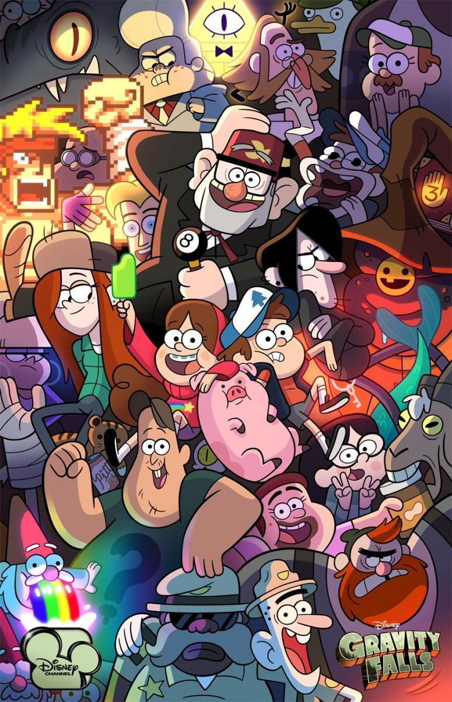

Series
Esta semana review de gravity falls

No son pocos los elementos de Gravity Falls que la han convertido en una serie animada destacada. Por un lado, tiene una historia encantadora, personajes entrañables y una animación preciosa; además, es inteligente y trata a su público como tal, es muy divertida con su humor simple e hilarante que se combina con no poco humor negro y ácido; su abanico de elementos capta a los pequeños y a los adultos por igual.